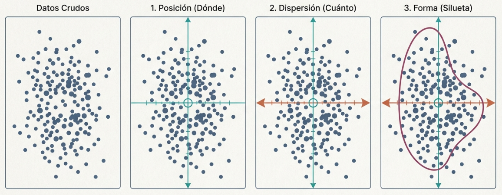
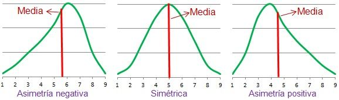
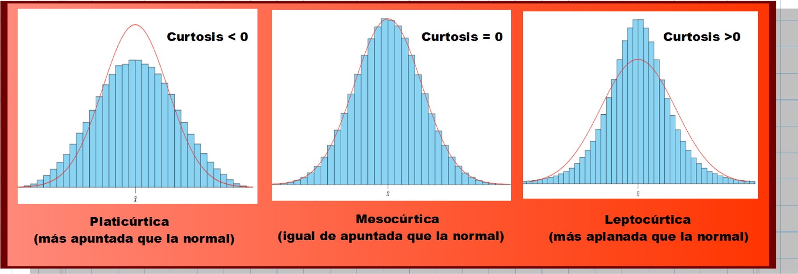
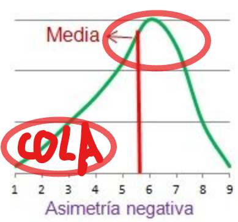
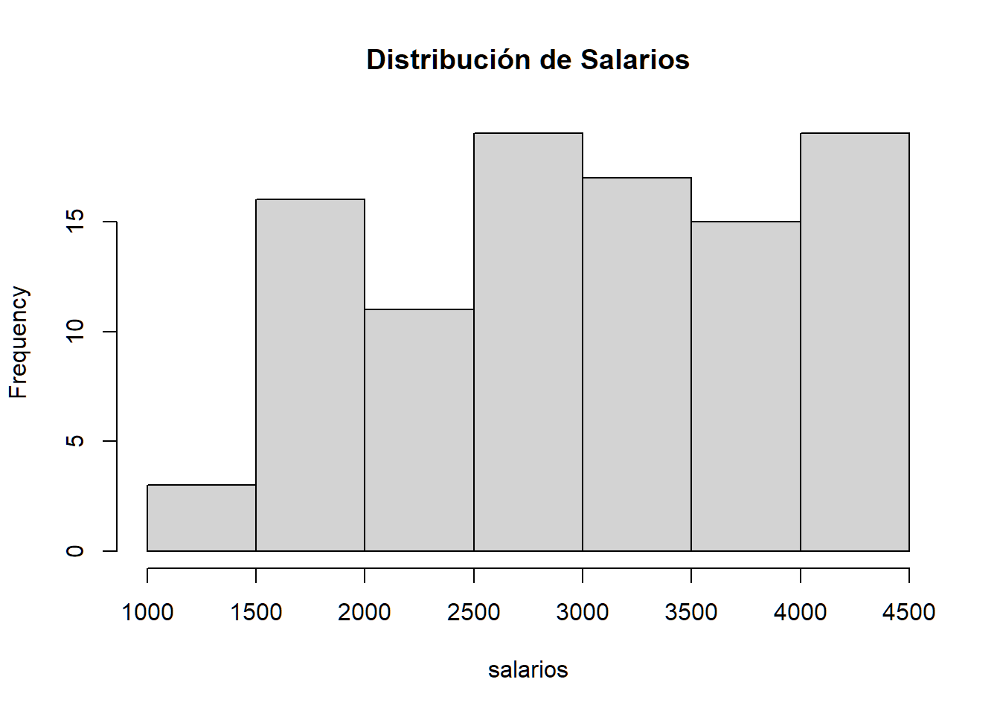
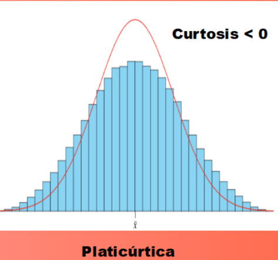
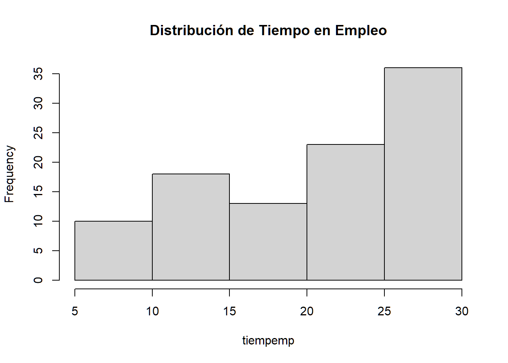

Lo que tienes en este apartado es lo más importante del análisis descriptivo que es el primer paso en cualquier estudio de datos. Básicamente, cuando tienes un montón de números, necesitas tres “fotos” para entenderlos: dónde están (posición), qué tan regados están (dispersión) y qué cara tienen (forma).

Para entender un conjunto de datos, no basta con mirar un solo número. Necesitamos tres “fotografías” distintas para captar la realidad completa: dónde están (posición), qué tan regados están (dispersión) y qué cara tienen (forma).
Indican el centro o los puntos de corte de los datos.
## [1] 146.6875## [1] 123## 25% 50% 75%
## 96.5 123.0 180.0Indican la variabilidad. Nos dicen qué tan “mentirosa” o representativa es la media.
# sd(datos$salario)
# var(datos$salario)
# IQR(datos$salario)
# cv <- function(x) sd(x) / abs(mean(x))Indican la silueta de la distribución y su parecido con la campana de Gauss (Normal).
# library(moments)
# skewness(datos$salario)
# kurtosis(datos$salario) - 3 # Restamos 3 para obtener el exceso de curtosisNota de R: Recuerda que un gráfico siempre vale más que mil tablas. Usa
boxplot()para posición/dispersión ehist()para la forma.
Las medidas de posición resumen la localización central y los puntos de corte de la distribución.
¡ATENCIÖN! Como no tienes el archivo salarios, lo hago con un vector. Si no tendrías que hacer
datos <- read.txt("salarios.txt, ......)
mean(datos$nombre_columna_donde estén_los _salarios)
Si no te acuerdas mira los apuntes de la profesora y mira cómo lo hace.
Lo hago con un vector (salarios) inventado:
# Este vector lo necesitas para calculas skewness
salarios <- c(
2675, 4122, 2891, 1943, 3310, 4452, 2768, 1502, 3684, 2197,
4391, 3054, 2567, 1823, 4015, 3128, 2341, 1675, 3762, 2901,
4210, 3543, 1489, 2755, 3982, 2267, 4412, 1987, 3245, 2671,
1356, 3890, 3122, 2456, 4078, 2893, 1765, 3521, 2109, 4345,
3287, 2654, 1902, 4156, 3432, 2589, 1567, 3843, 2987, 2234,
4487, 3356, 2789, 1856, 4298, 3654, 2467, 1690, 3954, 3021,
1456, 4012, 3390, 2734, 4367, 2123, 3765, 2934, 1999, 4123,
3512, 2645, 1543, 3821, 3098, 2376, 4432, 3210, 2854, 1789,
4067, 3476, 2543, 1623, 3901, 3167, 2489, 4312, 3345, 2712,
1876, 4189, 3587, 2698, 1598, 3876, 3056, 2312, 4456, 3267
)## [1] 3022.53## [1] 3037.5## 25% 50% 75%
## 2333.75 3037.50 3826.50## 0% 10% 20% 30% 40% 50% 60% 70% 80% 90% 100%
## 1356.0 1757.5 2120.2 2526.8 2746.6 3037.5 3296.2 3607.1 3959.6 4218.8 4487.0## 0% 1% 2% 3% 4% 5% 6% 7% 8% 9%
## 1356.00 1455.00 1488.34 1501.61 1541.36 1565.80 1596.14 1621.25 1670.84 1688.65
## 10% 11% 12% 13% 14% 15% 16% 17% 18% 19%
## 1757.50 1786.36 1818.92 1851.71 1873.20 1898.10 1936.44 1979.52 1996.84 2088.10
## 20% 21% 22% 23% 24% 25% 26% 27% 28% 29%
## 2120.20 2181.46 2225.86 2259.41 2301.20 2333.75 2366.90 2434.40 2463.92 2482.62
## 30% 31% 32% 33% 34% 35% 36% 37% 38% 39%
## 2526.80 2559.56 2581.96 2626.52 2650.94 2665.05 2673.56 2689.49 2706.68 2725.42
## 40% 41% 42% 43% 44% 45% 46% 47% 48% 49%
## 2746.60 2762.67 2780.18 2826.05 2874.72 2892.10 2897.32 2918.49 2961.56 3004.34
## 50% 51% 52% 53% 54% 55% 56% 57% 58% 59%
## 3037.50 3054.98 3076.16 3109.28 3124.76 3145.55 3185.92 3225.05 3254.24 3275.20
## 60% 61% 62% 63% 64% 65% 66% 67% 68% 69%
## 3296.20 3323.65 3349.18 3368.58 3405.12 3447.40 3488.24 3514.97 3528.04 3556.64
## 70% 71% 72% 73% 74% 75% 76% 77% 78% 79%
## 3607.10 3662.70 3705.84 3762.81 3779.56 3826.50 3850.92 3879.22 3892.42 3912.13
## 80% 81% 82% 83% 84% 85% 86% 87% 88% 89%
## 3959.60 3987.70 4012.54 4023.84 4068.76 4084.60 4122.14 4127.29 4159.96 4191.31
## 90% 91% 92% 93% 94% 95% 96% 97% 98% 99%
## 4218.80 4299.26 4314.64 4346.54 4368.44 4392.05 4412.80 4432.60 4452.08 4456.31
## 100%
## 4487.00Estas medidas cuantifican cuánto se alejan los datos de su centro.
# Rango: diferencia entre el valor máximo y mínimo
rango <- max(salarios) - min(salarios)
# Rango Intercuartílico: dispersión del 50% central de los datos
IQR(salarios)## [1] 1492.75## [1] 808352## [1] 899.084# Coeficiente de Variación: medida relativa de dispersión (útil para comparar grupos)
cv <- function(x) { sd(x) / abs(mean(x)) }
cv(salarios)## [1] 0.2974607## [1] 4487## [1] 1356## [1] 3131## [1] 1492.75## [1] 808352## [1] 899.084# Coeficiente de Variación: medida relativa de dispersión (útil para comparar grupos)
cv <- function(x) { sd(x) / abs(mean(x)) }
cv(salarios)## [1] 0.2974607Evalúan la distribución de los datos respecto a la normalidad.
El código siguiente hace dos cosas fundamentales para entender la “cara” de tus datos:
hist() (Lo visual): Dibuja un histograma para que veas la forma de la distribución de tus salarios.
skewness() (Lo matemático): Calcula un número que mide si los datos están repartidos equitativamente o si hay una “cola” larga de valores extremos (asimetría).
En una frase: Es el diagnóstico que te permite confirmar visual y numéricamente si tus salarios siguen una distribución normal o si están “estirados” hacia algún extremo.
Mide la falta de simetría respecto a la media.

Indica la concentración de datos en la zona central y la “pesadez” de las colas. Para compararla con la Normal, usamos el exceso de curtosis (restando 3).

Objetivo: Evaluar la “silueta” y la normalidad de las variables cuantitativas mediante medidas de forma (skewness/asimetría y curtosis), combinando el análisis gráfico con el cálculo estadístico.
Datos: salario y tiempo en la empresa.
salarios <- c(
2675, 4122, 2891, 1943, 3310, 4452, 2768, 1502, 3684, 2197, 4391, 3054, 2567, 1823, 4015, 3128, 2341, 1675, 3762, 2901, 4210, 3543, 1489, 2755, 3982, 2267, 4412, 1987, 3245, 2671, 1356, 3890, 3122, 2456, 4078, 2893, 1765, 3521, 2109, 4345, 3287, 2654, 1902, 4156, 3432, 2589, 1567, 3843, 2987, 2234, 4487, 3356, 2789, 1856, 4298, 3654, 2467, 1690, 3954, 3021, 1456, 4012, 3390, 2734, 4367, 2123, 3765, 2934, 1999, 4123, 3512, 2645, 1543, 3821, 3098, 2376, 4432, 3210, 2854, 1789, 4067, 3476, 2543, 1623, 3901, 3167, 2489, 4312, 3345, 2712, 1876, 4189, 3587, 2698, 1598, 3876, 3056, 2312, 4456, 3267
)
tiempemp = c(
28, 14, 21, 5, 23, 29, 14, 30, 26, 10, 29, 21, 16, 8, 27, 22, 12, 19, 26, 20,
28, 25, 29, 14, 27, 11, 29, 9, 22, 15, 30, 27, 22, 11, 28, 20, 18, 25, 10, 29,
22, 15, 9, 28, 24, 16, 30, 27, 20, 12,30, 23, 15, 9, 29, 25, 12, 19, 27, 21,
30, 28, 23, 15, 29, 10, 26, 20, 9, 28, 24, 15, 30, 27, 21, 12, 29, 22, 20, 19,
28, 25, 16, 18, 27, 22, 12, 29, 23, 15, 9, 28, 25, 15, 30, 27, 21, 12, 29, 22)La Asimetría (skewness) nos indica la inclinación de la distribución respecto a la media
La Curtosis mide el grado de concentración de los datos en la zona central y el peso de las colas.
ATENCIÓN: Para hacer estos estudios hay que tener
instalada la librería moments
# 1. Asegúrate de tener la librería necesaria instalada
# install.packages("moments")
library(moments)El código siguiente hace dos cosas fundamentales para entender la “cara” de tus datos:
hist(salarios, …) (Lo visual): Dibuja un histograma para que veas la forma de la distribución de tus salarios.
skewness() (Lo matemático): Calcula un número que mide si los datos están repartidos equitativamente o si hay una “cola” larga de valores extremos (asimetría).
En una frase: Es el diagnóstico que te permite confirmar visual y numéricamente si tus salarios siguen una distribución normal o si están “estirados” hacia algún extremo.
Como verás, el resultado da un skewness (asimetría) de \(-0.08806186\), lo que significa una skewness ligeramente negativa. Podríamos decir que con un valor tan bajo es casi cero. Podríamos decir que es casi simétrica.


asim_salario <- skewness(salarios)
asim_salario # en este caso verás que da -0.08806186 (pequeña desviación)## [1] -0.08806186Este bloque de código hace dos cosas muy específicas para medir la curtosis (la “agudeza” o “pesadez” de las colas de la distribución):
¿Por qué el “- 3”?:
La Distribución Normal (la famosa “campana de Gauss”) tiene una curtosis matemática de 3.
Al restarle 3, estamos “normalizando” el valor: ahora, el 0 es nuestro punto de referencia perfecto para la normalidad.
Interpretación de los resultados : Verás que da una curtosis de \(-1.05239\), esto significa:
Es una distribución Platicúrtica: Al ser un número negativo, significa que tu distribución es “más plana” o “achatada” que una distribución normal.
Visualmente: Imagina una campana de Gauss normal; la tuya se ve como si alguien la hubiera presionado desde arriba, haciéndola más ancha y con los bordes menos marcados.


curt_tiempo <- kurtosis(tiempemp) - 3
# Mostramos el valos de curt_tiempo que almacene la curtosis
curt_tiempo## [1] -1.05239